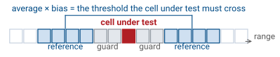
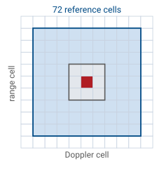
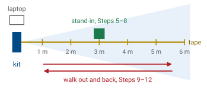

L30 - CFAR Processing#
CFAR Processing
A threshold set from 32 neighboring cells holds one false alarm in a million at any noise level, losing 1 dB of SNR.
Lesson 30 · Antennas, Phased Arrays, and Radar Systems · Dr. Neil Rogers
Printing
To print the slides, switch to present mode and print: one slide a sheet, with room for notes. Print from read mode for the whole lesson.
Learning Objectives
- I can apply constant false-alarm rate (CFAR) processing to radar data and evaluate detection performance.
The radar’s job at this stage is to find the targets: to say, for every cell of the range profile or the range-Doppler map, “target here” or “not”, with no person looking at it. Lesson 27 made that decision with a fixed threshold, which needs the noise level. This lesson measures the noise around each cell and sets each cell’s threshold from it: constant false-alarm rate (CFAR) processing. It shows what CFAR does to the picture, what its controls change, what goes wrong near a strong target or a clutter edge, and how to check it by counting false alarms. The L30 Lab then runs it twice: on your kit’s live range profile in the Phaser app, and on range-Doppler maps in the notebook.
The lesson is reading, done before the lab with Part 1 of the packet. Its examples use a 400 MHz chirp, so its cells are 0.375 m, not the app’s. The L30 Lab follows the lesson on this page, from The Big Picture on.
Finding the Targets
Goal: a list of targets, decided cell by cell, automatically.
A fixed threshold needs the noise level.
The noise moves; 3 dB more turns one false target in a million into one in a thousand.
A range-Doppler map holds tens of thousands of cells, and the radar has to say, for each one, “target here” or “not”, with no person looking at it. The tracker and the classifier of Lesson 31 work from that list.
Lesson 27 made the decision with a threshold set so that noise alone almost never crosses it: noise of power \(P_n\) crosses a threshold \(T\) with probability \(P_{fa} = e^{-T/P_n}\). If the noise rises by a factor \(g\) while \(T\) stays put, the probability becomes \(P_{fa}^{1/g}\), and 3 dB more noise turns \(10^{-6}\) into \(10^{-3}\).
The noise on a real map does move: clutter near zero velocity, strong reflections near the radar, and the receiver gain all shift it. CFAR keeps the decision and fixes the threshold: it measures the noise around each cell and sets that cell’s threshold from it.
Cell Under Test, Guard, and Reference

Reference cells estimate the local noise.
Guard cells keep the target’s own energy out of the estimate.
The window slides, so every cell gets its own threshold.
The detector tests one cell at a time, the cell under test. On each side it skips a few guard cells and averages a block of reference cells; that average, times a bias, is the threshold. A cell over its threshold is a detection. The window then moves one cell, so every cell gets a threshold from its own neighbors. Near the first and last range cells the window averages the reference cells that exist on one side only; along Doppler it wraps, because the cell past \(+v_\text{max}\) is \(-v_\text{max}\).
The figure draws 2 guard and 4 reference cells a side so that the cells are readable. The running example in this lesson uses 2 guard and 16 reference cells a side, \(N = 32\) reference cells in all.
Cell-Averaging CFAR
\(P_{fa}\) depends on \(\alpha\) and \(N\), and not on \(P_n\).
With \(z_i\) the power in reference cell \(i\), the cell-averaging (CA) estimate is the sample mean \(\hat{P}_n\), and the threshold is \(T = \alpha\hat{P}_n\) for a bias \(\alpha\) we choose. Averaging Lesson 27’s \(e^{-T/P_n}\) over the scatter of the estimate gives the false-alarm probability above, and \(P_n\) drops out: wherever the noise sits, noise alone crosses with the same probability. That is the constant false-alarm rate. It assumes reference cells that hold only noise, of the same mean as the cell under test, independent from cell to cell; the rest of the lesson is about when they do not.
The Bias From the False-Alarm Probability
A known \(P_n\) needs 11.4 dB; 32 reference cells need 12.4 dB.
Inverting the false-alarm expression gives the bias for a chosen \(P_{fa}\). For \(P_{fa} = 10^{-6}\) and \(N = 32\) it is 17.3, or 12.4 dB; with 16 reference cells it is 13.4 dB, and with 72 it is 11.8 dB. With the noise known, Lesson 27 needed 11.4 dB. The bias is larger with fewer cells because the estimate scatters: when it comes out low, the threshold drops with it, and the extra bias offsets those low estimates.
ADI’s target_detection_dbfs.py averages the reference cells in dB rather than in power. Its threshold still follows the noise, but its bias is not this lesson’s \(\alpha\); the Phaser app and the provided code average power.
CFAR Loss

A higher bias needs more SNR for the same \(P_d\).
32 cells lose 1.0 dB; 16 lose 2.1 dB.
A higher bias shortens the range: \(R \propto \text{SNR}^{-1/4}\).
Because its threshold is higher on average and scatters with the estimate, a CA-CFAR detector needs more SNR than a known-noise detector for the same \(P_d\). The difference is the CFAR loss; read any window’s loss off the curve. More reference cells lose less, but a wider window is more likely to reach noise of a different level: 2 guard and 16 reference cells a side span about 14 m at 0.375 m cells.
Any extra SNR the detector needs shortens the range. The echo power falls as \(R^{-4}\) (Lesson 27), so a target that just reaches the threshold at range \(R_1\) reaches a threshold \(\Delta\) dB higher only out to
provided the noise alone sets where the detector loses the target.
Choosing the Guard Cells
A Hann window puts −6 dB of the target in each neighboring cell.
Without guard cells, the target raises its own threshold.
Guard cells cover the target’s extent, in range and in Doppler.
A target does not occupy exactly one cell. The window applied before the FFT widens its peak. With a Hann window, a target centered in its cell puts a quarter of its power, 6 dB down, in each neighbor; for one between two cells, the near neighbor can sit within about 2 dB of the peak. The Phaser app uses a Blackman window, whose main lobe reaches three cells each side; a centered target’s neighbors sit 4.5 dB and 20 dB down. A person also spans several cells, most of all in Doppler.
Without guard cells, that spill lands in the reference cells and raises the target’s own threshold; far above the noise, only the spill matters. With \(s_k\) the power in each of its neighbors inside the window, as a fraction of its peak, the target’s margin over its threshold is
A centered Hann target with no guard cells, 6 reference cells a side, and a 12 dB bias has \(\sum s_k = 2 \times 0.25\), so the margin is \(-10\log_{10}(15.8 \times 0.5/12) = +1.8\) dB: found, barely. One or two guard cells a side remove the problem for Hann; Blackman needs three.
CFAR Explorer
The widget draws one range profile with the CFAR threshold over it in green, five targets marked along the top, and clutter 15 dB above the noise from cell 168 on. Set the guard cells to 0 and watch each target lift its own threshold; lower the bias until false alarms appear; then switch the method to greatest-of and smallest-of, the subject of the next frames.
Failures of Cell Averaging

A second target in the window hides the weaker one: masking.
At a clutter edge, one average mixes two noise levels.
On the left, an 18 dB target sits eight cells from a 24 dB target. When the weaker target is the cell under test, the stronger one and its two neighbors are in its reference window, and they hold about \(251 + 2 \times 63\) times the noise power. Spread over 32 cells, that raises the estimate by a factor of about 12.7, 11 dB, so the threshold rises to 23.4 dB and the detector misses the 18 dB target. This is masking: two people walking side by side, a hand in front of a body, or a target near the kit’s own leakage at 0 m.
On the right, the noise rises 15 dB at cell 60, the edge of a clutter region. A cell in the clear just before the edge has half its reference cells in the clutter, so its threshold rises by about 12 dB and masks a target there. A cell just inside the clutter has half its reference cells in the clear, so its threshold sits 3 dB low and its false alarms rise a thousandfold. The edge produces misses on one side and false alarms on the other.
Greatest-Of and Smallest-Of
Greatest-of holds \(P_{fa}\) at a clutter edge.
Smallest-of finds a target beside another.
Both variants average the nearer and the farther side of the window separately and keep one.
Greatest-of (GO) keeps the larger. At a clutter edge the side in the clutter wins, so a cell just inside the clutter meets a threshold at the clutter level and its false alarms stay near the design value: the dashed red line in the right panel of the last figure. GO misses targets just before the edge, and it makes masking worse.
Smallest-of (SO) keeps the smaller. When a second target sits on one side, the clean side wins and the detector finds the weaker target: the dashed orange line in the left panel. SO lets clutter through at an edge instead. Each needs its own bias for the same \(P_{fa}\).
2D CFAR on the Range-Doppler Map

The guard and reference cells become nested boxes.
1 guard and 3 reference cells each way give 72 cells: 11.8 dB, 0.4 dB loss.
The zero-velocity clutter ridge is an edge: run MTI first.
On the range-Doppler map the guard cells become a box around the cell under test, and the reference cells the ring between it and a larger box. With 1 guard and 3 reference cells each way, the boxes are 9 by 9 and 3 by 3, so \(N = 81 - 9 = 72\): a bias of 11.8 dB for \(10^{-6}\) and a loss of 0.4 dB. Greatest-of and smallest-of split the ring into a nearer and a farther half in range; the 6 reference cells at the cell under test’s own range belong to neither, so each half holds \((72 - 6)/2 = 33\) cells.
Without MTI, stationary echoes form a ridge along zero velocity, a clutter edge that CFAR declares as targets; MTI from Lesson 29 removes most of it first.
Detections From the Map

One target produces a cluster of detections.
CFAR also detects the clutter that MTI leaves.
The synthetic map holds a walker, a hand, and the clutter a 2-pulse canceller leaves near the radar. CFAR declares both targets and the strongest clutter cell. Each target is a cluster, because its peak spreads into neighbors that are also well above the noise; the detection list the notebook keeps has one entry per cluster, its strongest cell, in meters and meters per second.
Measuring the False-Alarm Rate
Check the design at a lower bias, where false alarms are common.
A count scatters by about its own square root.
\(P_d\) is the fraction of maps that find the target.
We check the bias by counting: on a map with no target, every detection away from the clutter is a false alarm. At \(10^{-6}\) a map of \(256 \times 128\) cells averages one every 31 maps, too few to count, so we check the design at \(10^{-3}\) or \(10^{-4}\), where the expected count is \(P_{fa}\) times the cells tested: 33 and 3. A count scatters by about its own square root, \(33 \pm 6\) and \(3 \pm 2\). A count well above the design means the reference cells break an assumption: noise of a different level, or cells a window has correlated, which average like fewer independent ones.
A display that redraws one range profile at a time asks how many updates hold any crossing. With 6 reference cells a side, \(N = 12\), a 9 dB bias, and \(M = 100\) cells an update:
so about 6 of 30 updates hold a crossing.
We measure \(P_d\) the same way, as the fraction of maps that find a known target. To predict it, take the target’s SNR less the window’s CFAR loss and read Lesson 27’s curves, or run Albersheim’s equation backward. A steady target with 13 dB of SNR and a 32-cell window at \(10^{-6}\) loses 1.0 dB, so it behaves like 12 dB with the noise known:
Lesson 27’s curve reads 0.68; past \(P_d = 0.9\), Albersheim’s fit no longer holds, so read the curve. If only the noise changes from map to map, the target is steady; a hand or a person whose own echo fluctuates follows Lesson 27’s lower Swerling numbers.
Summary
Idea |
What it is |
Number to remember |
|---|---|---|
CA-CFAR |
\(T = \alpha\hat{P}_n\), \(P_{fa} = (1 + \alpha/N)^{-N}\) |
independent of \(P_n\) |
Bias |
\(\alpha = N(P_{fa}^{-1/N} - 1)\) |
12.4 dB for 32 cells at \(10^{-6}\) |
CFAR loss, range |
extra SNR; \(R_2/R_1 = 10^{-\Delta/40}\) |
1.0 dB at 32 cells; 6 dB: 0.71 |
Guard cells |
keep the target’s spill out |
Blackman needs three |
Masking, clutter edge |
another echo or noise level in the window |
misses and false alarms |
Greatest-of, smallest-of |
keep the larger or smaller half |
GO for edges, SO for close targets |
Counting |
false detections over cells; \(1 - (1 - P_{fa})^M\) an update |
scatter: the square root |
Pre-Lab
Part 1 of the L30 Lab packet is the pre-lab. Do it before the lab and bring it with you: each prediction sits in a shaded cell beside the Measured cell that checks it. The lesson works each method on its own example, so the numbers on this page are not your answers.
Part 1 |
You predict |
Method |
Checked in |
|---|---|---|---|
Table A |
whether a target 3 m out is found at the app’s opening setting, at the lesson’s window, and with no guard cells |
Cell Under Test, Guard, and Reference; Choosing the Guard Cells; Failures of Cell Averaging |
Steps 6 to 8 |
Table B |
how much a 3 dB higher bias shortens the farthest range |
CFAR Loss |
Steps 9 to 12 |
Table C |
updates of 30 with a noise crossing at three biases |
The Bias From the False-Alarm Probability; Measuring the False-Alarm Rate |
Steps 13 to 15 |
Table D |
the 2D bias for two false-alarm rates, and the false alarms on an empty map |
2D CFAR on the Range-Doppler Map; Measuring the False-Alarm Rate |
Step 17 |
Table E |
whether each method finds a weak target beside a strong one |
Failures of Cell Averaging; Greatest-Of and Smallest-Of |
Step 18 |
Table F |
\(P_d\) at two biases |
CFAR Loss; Measuring the False-Alarm Rate |
Step 19 |
The Big Picture
Steps |
You set |
You measure |
|---|---|---|
1–4 |
Range (CFAR), CFAR on |
the range profile |
5–8 |
window and bias |
a target: found? |
9–12 |
bias, then +3 dB |
your detected ranges |
13–16 |
three biases, empty beam |
crossings |
17–21 |
notebook tasks |
false alarms, \(P_d\) |
The L30 Lab runs the lesson’s detector twice. In the Phaser app, on its Range (CFAR) preset, the kit draws one range profile each display update with a one-dimensional CFAR threshold over it. You place the threshold against a target and the room’s clutter, walk through the beam with it applied, and count what crosses it with the beam empty. In the notebook, the provided cfar_2d runs on range-Doppler bursts of the Range + Velocity preset, the L29 burst: you set the bias for a false-alarm rate and count, compare cell averaging, greatest-of, and smallest-of, measure \(P_d\), and make a detection list. Steps 5 to 16 fill Tables A to C of Part 2, and the notebook steps fill Tables D to F, each beside the prediction you made in Part 1.
Predict First
Before you tune the app, predict what its threshold does. The widget runs one range profile, the kit’s leakage at 0 m, a person, and a wall, through the app’s processing, with the app’s three CFAR controls. Once you show the threshold, it shades the person’s guard cells gray and reference cells blue, and the strip under the axis marks which of the 30 updates held a noise crossing. Set Guard Cells, Ref Cells, and CFAR Bias, and decide before you press Show threshold whether the person is found and in how many of 30 updates the noise crosses. Then show it. Any change hides the threshold again, so each guess comes first. The widget runs the lesson’s 400 MHz example chirp, with 0.375 m cells over 60 m, and its own room, so its answers are not your Part 1 answers; the method is the same.
Bring Up the Kit
Transmit antenna on OUT2 before power; the kit faces a clear line, 4 m or longer.
Range (CFAR) preset, your 0 m frequency, Range Max 20 m.
Range view, CFAR on, Show Threshold.
You need the kit, a tape measure laid along the floor in front of it, a stand-in target (a chair with a backpack on it, or a metal trash can), and a screen recorder on your laptop for Step 9.
Connect the transmit antenna to OUT2 with the kit powered off.
Power the kit and open the Phaser app, and select FMCW. Point the kit along a clear line at least 4 m long.
Set the preset. Choose Range (CFAR). Enter your 0 m frequency from the L28 Lab in 0 m Beat (kHz), or press Calibrate… and follow it. Leave Range Max (m) at 20 and the FFT Window at Blackman: Part 1’s cell count is for that 0 to 20 m profile.
Turn on CFAR. Open the Range view, turn CFAR on, and set CFAR Mode to Show Threshold: a dashed threshold over the trace, with a marker on every cell that crosses it. The app counts Guard Cells and Ref Cells on each side of the cell under test and averages the reference cells as power, so Ref Cells \(= n\) is the lesson’s \(N = 2n\). Leave the plot’s dB limits alone while you tune: making the clutter fade from the plot hides it from you, not from the detector.
Place the Threshold

A stand-in at 3 m, so you tune from outside the beam.
The app’s opening setting, the lesson’s window, then your own.
Your setting puts the target 3 dB over and every noise peak 3 dB under.
Place the stand-in 3 m out on the tape. Find its peak in the Range view, and the clutter: the leakage at 0 m, the far wall, any furniture. The leakage and the walls are real echoes and cross any CFAR threshold; note them, but do not tune them away.
The app’s opening setting. With 4 Guard Cells, 16 Ref Cells, and 6 dB, record whether the target is found, its margin over the threshold (negative if it sits below), and the margin of the highest noise peak, from the plot’s hover readout. Compare with your prediction.
The lesson’s window. Set 2 Guard Cells, 16 Ref Cells, and type 12.4 into CFAR Bias (dB). Record the same three readings and compare with your prediction.
Your setting. The threshold at a cell comes from everything \(g + n\) cells each side of it. Change the three controls until the target sits at least 3 dB over the threshold and the highest noise peak at least 3 dB under it, and record them with both margins. Then set Guard Cells to 0, record how far the threshold at the target rises and whether the target is still found, and compare with your prediction. Set the guard cells back, and move the stand-in out of the beam.
Walk the Line
Detections Only, at your setting, with the screen recording on.
Walk slowly out from 1 m to the end of the line, and back.
Again with the bias 3 dB higher; read both recordings afterward.
Apply the threshold. Set CFAR Mode to Detections Only, so the plot blanks everything below the threshold, and start your screen recording (Win+Alt+R in the Xbox Game Bar on Windows, Shift+Cmd+5 on a Mac). You cannot walk and read the laptop at once, so the recording captures the display for you to read afterward.
Walk the line. Every kit in the room transmits, so anyone in your beam is a target; agree with your neighbors who walks when. Walk slowly straight out along the tape from 1 m to the far end of the clear line, and back. A fast walk smears your echo across updates. Stop the recording.
Raise the bias 3 dB, record a second walk the same way, and set the bias back.
Read the recordings. Play each back and read, from the plot’s range axis, the nearest and the farthest range at which your peak stays detected, and anything else that crossed. Divide the second walk’s farthest range by the first’s and compare the ratio with your prediction.
Count on an Empty Scene
3 Guard Cells, 4 Ref Cells, beam clear.
Watch the crossings at 13, 10, and 7 dB.
Save Capture; the notebook counts 30 updates at each bias.
Save two Range + Velocity bursts for the notebook.
Clear the beam. Set 3 Guard Cells, 4 Ref Cells, and 13 dB, still in Detections Only, and step behind the kit. Watch a few seconds of updates at 13 dB, then 10, then 7, and note where the crossings land. A crossing that stays at one range update after update is clutter, not noise. Set the bias back to 13 dB.
Press Save Capture. It saves 32 updates of the empty scene. The saved chirps do not depend on the CFAR settings, so one capture serves all three biases.
Count in the notebook. In the first cell set
EMPTY_FILEto your capture’s name; in the Procedure A cell setG1, R1, BIAS1 = 3, 4, 13.0and run it; then run the Procedure C cell. It counts the updates, of 30, with a crossing beyond 1 m at 13, 10, and 7 dB. Compare each count with your prediction.Save two bursts. Set Preset to Range + Velocity and press Save Capture with the scene still empty; then save one with a hand waving about 2 m out. These are your own versions of
L30_empty.npzandL30_wall_hand.npz, for the notebook.
Run the Notebook
Task (a): the bias for a false-alarm rate, then count.
Task (b): cell averaging, greatest-of, smallest-of.
Task (c): the detection rate over 50 maps, and the detection list.
Each task names the line to change. To run a task on your own burst, change the file name in the first cell.
Task (a). Set
BIAS_DBfromPFAandN(one line) and run the cell at \(10^{-3}\); then setPFA = 1e-4; then setWINDOW = NonewithPFAback at \(10^{-3}\). Record what it prints beside your predictions.Task (b). Run the method cell with
METHOD = "ca", then"go", then"so". For each, record whether the weak target inL30_weak_strong.npzis found, and how many clusters of false alarms appear inL30_wall_hand.npzandL30_weak_strong.npztogether.Task (c), detection rate. The notebook calls these its steps 1 and 2. Run the detection cell at
BIAS_DB_C = 11.6, then at your Step 17 bias for \(10^{-3}\), and record each measured \(P_d\). With 50 maps, a measured \(P_d\) scatters by about 0.07.Task (c), detection list. The notebook’s step 3: add
axes=(rng, vel)to thecfar_2dcall in the last cell and run it. Record each entry of the list, and say which are targets. The cell writesL30_detections.csv, every entry kept.Save the notebook with its edits and plots, and upload the
.ipynbwith the packet. Keep the task cells and their variable names as they are.
No Hardware?
Note
You can fill every Measured cell without a kit. Open the Phaser app’s simulator at livethisdream.github.io/phaser, select FMCW, and set it up as Steps 3 and 4 describe. Its Scene list gives live targets to tune on: corners, three corner reflectors at 1, 2, and 3 m; walker, a person walking out to 4 m and back; and static. For the numbers, press Load Capture and open the recording from this lab’s bundle that each block names: the app plays it through the same CFAR, one update at a time, and loops. The notebook’s No Kit cells compute exactly what the app draws on the same files and print each reading. Tick Recorded on each table you fill this way.
Steps 5 to 8, Table A:
L30_range_person.npz, a person standing still 3.0 m out in front of a wall at 6.0 m. In the notebook’s Procedure A cell, setG1, R1, BIAS1to each row’s setting and run it: it prints found or missed and both margins. With 0 guard cells, the rise of the threshold is the drop in the target’s margin.Steps 9 to 12, Table B:
L30_walker.npz, a person walking from 1.0 m to 4.5 m and back toward a wall at 6.0 m, one update every 0.1 s. The Procedure B cell, atEXTRA_DB = 0and then3, prints the nearest and farthest ranges.Steps 13 to 15, Table C:
L30_range_empty.npz, noise and the kit’s leakage with no target. SetG1, R1, BIAS1 = 3, 4, 13.0in the Procedure A cell, and run the Procedure C cell.Steps 17 to 21, Tables D to F: the notebook as shipped, on the recorded bursts.
Load Capture sets the waveform and the 0 m frequency from the file, so leave 0 m Beat (kHz) empty: a value there overrides the file’s. The app draws a course recording about 66 dB lower on its dB axis than the notebook’s dBFS, because the course files hold full-scale units and the app expects the kit’s raw counts. Every number the tables ask for is a difference in dB, so the two agree.
Notebook Setup
Download this lab’s bundle, L30_lab.zip, and unzip it into your Module 4 folder from the L28 Lab’s Notebook Setup, which has the Python steps. It holds everything the notebook loads: L30_cfar.ipynb, the current radar_lab.py (replace the copy you have), the six L30_*.npz recordings, and the data README.txt. Put your own Save Capture files in the same folder. Start Jupyter in the folder with jupyter lab and open L30_cfar.ipynb. Its first cell prints each file it found; if it reports that radar_lab is missing, the module is not in the same folder as the notebook.
Your Part 2 Entries
This frame collects every box you filled in on this page. Your entries stay in this browser only, saved as you type. Download my packet writes them into Part 2 of the blank packet and saves the PDF; do Parts 1 and 3 on paper or in the PDF viewer, and upload one PDF to Gradescope with the notebook. If you have already typed Part 1 into the packet PDF, use Fill my own copy and choose that file instead: your Part 1 is kept, and the page adds Part 2 to it. Either way the result is locked, so finish any typing in the PDF first. Export entries saves a small backup file you can Import on another laptop or after clearing your browser. The boxes are optional: the blank packet is in the next frame, to fill on paper or in a PDF viewer instead.
Lab Packet
The L30 Lab packet is one submission, turned in complete before Lesson 31, with the notebook. It has three parts:
Part 1, Predict (before the lab): the shaded Predicted cells of Tables A to F.
Part 2, Measure (your kit or the recorded data): the white Measured cells of the same tables.
Part 3, Analyze (after the lab): three prompts about what you measured.
For Part 3
Part 3 asks about three things you measured, each from your own Part 2 numbers and your Part 1 predictions: what set the ranges at which your threshold found the target (Tables A and B); how your false-alarm counts compare with the design (Tables C and D); and which method and bias you would run on the L31 Lab’s records, from Tables E and F. Keep L30_detections.csv, your captures, and the notebook with your L28 and L29 work: the file records what this chain found on your burst.
Looking Ahead
Lesson 31 takes the detections CFAR declares and asks what each target is and where it goes next: classification from micro-Doppler, and tracking.